Entfernen eines Punktes des euklidischen Raums nicht homeomorph zum euklidischen Raum
1. Satz
Sei  mit der Standardtopologie und 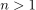 gegeben, dann gilt für 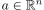:
mit der Standardtopologie und 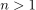 gegeben, dann gilt für 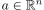:
2. Beweis - sehr messsy :(
2.1. a)
Angenommen es existiere ein Homeomorphismus 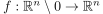
Dann wählen wir eine Folge 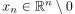 mit  , z.B. 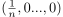.
Wir können annehmen, dass 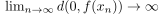, da sonst eine beschränkte teilfolge und nach dem allgemeinen Satz von Bolzano-Weierstrass eine konvergente Teilfolge 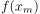 existiert.
Diese würde konvergieren gegen ein
, z.B. 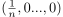.
Wir können annehmen, dass 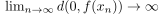, da sonst eine beschränkte teilfolge und nach dem allgemeinen Satz von Bolzano-Weierstrass eine konvergente Teilfolge 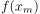 existiert.
Diese würde konvergieren gegen ein  und es folgt aus der Folgenstetigkeit von
und es folgt aus der Folgenstetigkeit von  , dass 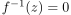 sein müsste, was nicht welldefined ist.
, dass 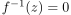 sein müsste, was nicht welldefined ist.
$
2.2. b)
Da die Einheitssphäre 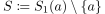 Kompakt ist, ist auch damit auch das Bild 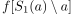 Kompakt und insbesondere beschränkt mit 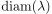.
Da zudem 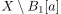 nicht Kompakt ist, ist auch das Bild 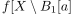 nicht Kompakt, d.h. das äußere von bildet nicht auf die Beschränkte Pfadkomponente von 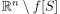 ab - insbesondere muss auf genau eine Pfadkomponente abgebildet werden, da diese unter stetigen Abbildungen erhalten werden.
Sei 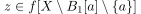
Dies ist aber ein Widerspruch, da nach a) ein  existiert, so dass 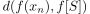 hinreichend groß ist und damit auch ein Weg von nach durch Faktorisierung über .
Widerspruch zu der Aussage über die Pfadkomponente des euklidischen Raums unter Einschluss einer Spähre
existiert, so dass 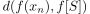 hinreichend groß ist und damit auch ein Weg von nach durch Faktorisierung über .
Widerspruch zu der Aussage über die Pfadkomponente des euklidischen Raums unter Einschluss einer Spähre